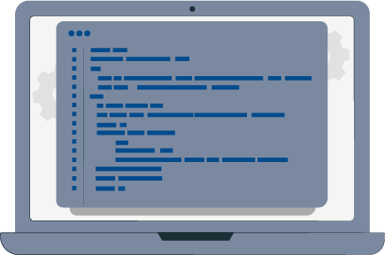
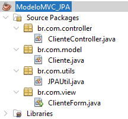
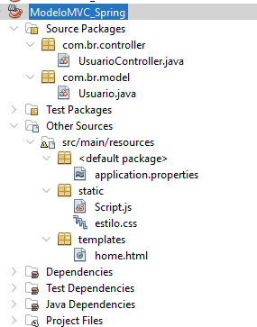
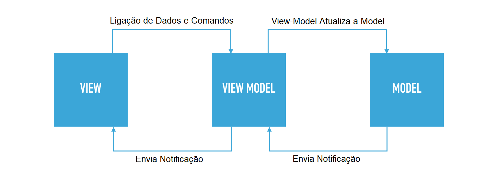

Como sugestão, configure a opção de leitura de caracteres e de pontuação de seu leitor de tela para o grau máximo de leitura, a fim de que os códigos disponibilizados neste material sejam lidos corretamente. No caso do NVDA (NonVisual Desktop Access), para localizar a opção Grau de pontuação/símbolos, acesse Preferências – Configurações – Fala. Altere o padrão Pouco para Tudo. Dessa forma, o leitor passará a ler os segmentos de código em sua totalidade.
MVC (MODEL-VIEW-CONTROLLER)
Durante esta jornada de aprendizado, você estudou diversas maneiras de criar projetos, incluindo o uso de conexões e a criação de interfaces com Java ou na web. No entanto, para que um projeto possa ser constantemente melhorado e ampliado para poder oferecer mais recursos aos usuários da aplicação, é essencial compreender um modelo que permeia muitos projetos, seja na web ou em desktops, o padrão de projeto Model-View-Controller (MVC).
O padrão Model-View-Controller (MVC) ajuda a estruturar o seu código de maneira lógica e eficiente, separando as preocupações e permitindo desenvolvimento, manutenção e escalabilidade mais fáceis. Este estudo se concentrará em como o MVC é aplicado no desenvolvimento de aplicações web usando o Spring. Você vai estudar também a relação do padrão MVC com projetos já desenvolvidos em outras UCs. Além disso, será explorado como as camadas de modelo, visão e controlador do MVC se relacionam entre si e como usar o Spring para implementar efetivamente esse padrão.
Conceitos
O padrão MVC de arquitetura de software propõe uma maneira de se pensar na divisão das responsabilidades de diferentes componentes que formam o sistema. No caso, separam-se três componentes principais: Modelo (manipulação de dados e regras de negócio), Visão (interface gráfica de interação) e Controle (orquestração entre as duas camadas). O modelo é amplamente utilizado no desenvolvimento de aplicações web, pois esse tipo de aplicação tem, por sua natureza, uma separação bastante clara de processamento (back-end) e visão (front-end). Muitos frameworks modernos de aplicação web, como o Spring Framework, incorporam o padrão MVC em sua arquitetura. Veja mais detalhadamente as definições a seguir.
Clique ou toque para visualizar o conteúdo.
![Ciclo da ligação do MVC em três etapas, uma no topo e duas abaixo, à direita e à esquerda. Na parte superior, há o “Model”, com o seguinte texto: “Model representa os dados e a lógica de negócio da aplicação. É responsável por armazenar e manipular informações, além de notificar a View quando houver alterações nos dados.”. Abaixo, à esquerda, há o “View”, com o seguinte texto: “View, por sua vez, representa a interface gráfica do usuário (GUI). É responsável por exibir as informações provenientes do Model e receber a interação do usuário.”. Abaixo, à direita, há o “Controller”, com o seguinte texto: “Controller atua como intermediário entre o Model e a View. É responsável por receber as requisições do usuário, processá-las e atualizar o Model e/ou a View de acordo.”.](imgs/layout_fig1.png)
- Model representa os dados e a lógica de negócio da aplicação. É responsável por armazenar e manipular informações, além de notificar a View quando houver alterações nos dados.
- View, por sua vez, representa a interface gráfica do usuário (GUI). É responsável por exibir as informações provenientes do Model e receber a interação do usuário.
- Controller atua como intermediário entre o Model e a View. É responsável por receber as requisições do usuário, processá-las e atualizar o Model e/ou a View de acordo.
| Camada |
Descrição |
| Camada de Apresentação (V) |
Responsável por exibir a interface do usuário para o usuário e manipular a entrada do usuário. |
| Camada de lógica de negócios (C) |
Responsável por executar a lógica de negócios do aplicativo. |
| Camada de acesso a dados (M) |
Responsável pela interação com o banco de dados. |
Tabela 1 – Definição das camadas MVC (Model, View e Controller) Fonte: Senac EAD (2023)
História do MVC
O padrão Model-View-Controller (MVC) foi inicialmente proposto por Trygve Reenskaug, em 1979, durante seu trabalho com Smalltalk-80 no Xerox PARC. Essa proposta de design representou uma inovação significativa para a época, ao introduzir a ideia de separar as responsabilidades na estruturação do software. Esse conceito ganhou amplo reconhecimento e passou a influenciar diversas tecnologias e frameworks que surgiram posteriormente. Entre eles, destacam-se Ruby on Rails, ASP.NET MVC e Java Web com uso do Spring. O MVC se tornou assim uma abordagem fundamental, que é utilizada em inúmeros frameworks e aplicações de sistemas em geral.
Vantagens no uso do padrão MVC
Uma das principais vantagens do padrão MVC é a facilidade na gestão de diferentes interfaces de usuário, sem precisar alterar o código responsável pela lógica de negócios. Isso torna a manutenção, os testes e as atualizações de sistemas complexos mais fáceis e eficientes. Quando um novo tipo de interface de usuário precisa ser adicionado ao sistema, basta criar um novo componente responsável pela apresentação dos dados (a "View") e outro componente responsável por gerenciar a interação entre essa nova view e o código existente (o "Controller").
Essa arquitetura modular torna a aplicação escalável e permite o desenvolvimento em paralelo das diferentes partes do sistema. O reúso do código é facilitado, tornando o processo de desenvolvimento mais ágil e econômico. Além disso, a arquitetura modular permite que desenvolvedores e designers trabalhem em paralelo, o que acelera o processo de desenvolvimento.
Veja suas principais vantagens:
- Facilidade: MVC facilita a gestão de diferentes interfaces de usuário.
- Não modificação de código: não há necessidade de modificar o código de lógica de negócios ao adicionar novas interfaces.
- Escalabilidade: a arquitetura modular do MVC torna a aplicação escalável e permite o desenvolvimento em paralelo.
- Reúso de código: o reúso de código é facilitado e o processo de desenvolvimento é mais ágil e econômico.
- Simplificação da interface: a transformação da interface é simplificada sem a necessidade de modificar a lógica de negócios.
- Melhora de desempenho: a estrutura de pacotes modulares melhora o desempenho e a produtividade da aplicação.
- Trabalho em paralelo: a arquitetura modular permite que desenvolvedores e designers trabalhem em paralelo, acelerando o processo de desenvolvimento.
- Eficiência na manutenção: partes específicas da aplicação podem ser modificadas sem alterar outras, tornando a manutenção mais eficiente e econômica.
Desvantagens no uso do padrão MVC
Por outro lado, uma das desvantagens do padrão MVC é que pode haver uma sobrecarga de trabalho e complexidade adicionais no processo de desenvolvimento, o que pode não ser justificável para projetos simples ou pequenos. Isso pode levar a um aumento no tempo e no custo do desenvolvimento, além de aumentar a curva de aprendizado para a equipe. Pode-se considerar também como desvantagem que se o padrão MVC não for bem implementado, pode levar a um código acoplado, ou seja, componentes do sistema que estão fortemente interconectados e dependem uns dos outros. Isso pode tornar o código difícil de entender, testar e manter, além de tornar a evolução do sistema mais difícil. Portanto, é importante que os desenvolvedores sigam boas práticas de implementação do padrão MVC para evitar o acoplamento excessivo e garantir um código modular e escalável.
- Sobrecarga de trabalho e complexidade: MVC pode adicionar complexidade desnecessária a projetos simples ou pequenos.
- Custo e tempo: a sobrecarga do MVC pode aumentar o tempo e custo do desenvolvimento.
- Código acoplado: a implementação ruim do MVC pode levar a código acoplado e dificultar sua compreensão, teste e manutenção.
- Boas práticas: desenvolvedores devem seguir boas práticas para evitar o acoplamento excessivo e garantir um código modular e escalável.
Aplicabilidade
Como mencionado anteriormente, MVC pode ser aplicado em uma variedade de tipos de projetos de software. Em projetos Java, é possível aplicar tanto para desktop quanto para web, e a separação das classes acontece por pacotes. É importante uma estruturação adequada do projeto para a boa utilização do padrão MVC. A seguir, veja um comparativo entre a estrutura de projetos Java desktop e web.
Clique ou toque para visualizar o conteúdo.

>
No exemplo a seguir, será demonstrada a implementação prática do padrão MVC em um exemplo de aplicação desktop em Java com uso do JPA, explorando a dinâmica de interação entre esses componentes.
Model: as classes de entidade representam objetos de domínio e são mapeadas para registros de banco de dados usando JPA. Por exemplo, uma classe de entidade de cliente pode ter propriedades para o nome, endereço e número de telefone do cliente. As classes de entidade são armazenadas em um banco de dados, como MySQL ou Oracle.
View: a interface do usuário é construída usando componentes gráficos como o Swing. Nessa camada, são criadas telas e formulários, como JForms, que permitem a interação do usuário com a aplicação. Por exemplo, uma visão do cliente pode exibir uma lista de clientes ou um formulário que permite aos usuários criar um novo cliente.
Controller: a interação entre o Model e a View é implementada em classes separadas, chamadas de controllers. Os controladores são responsáveis por gerenciar as ações do usuário, atualizar o modelo e visualizar conforme necessário. Por exemplo, um controlador de cliente pode manipular solicitações para visualizar uma lista de clientes, criar um novo cliente ou atualizar as informações de um cliente.

Figura 2 – Exemplo de Estrutura de pacotes em um projeto Java desktop com JPA
Fonte: Senac EAD (2023)
Nesta estrutura, o pacote model contém a classe Cliente.java, que representa a entidade Cliente mapeada para a tabela correspondente no banco de dados via JPA. A classe ClienteForm.java, no pacote view, é responsável pela interface do usuário, criada com Swing, para inserir ou editar informações do cliente. A classe ClienteController.java, no pacote controller, manipula as interações do usuário com a interface, atualiza o modelo Cliente e reflete as mudanças na visão. A classe JPAUtil.java, no pacote utils, administra a conexão com o banco de dados usando JPA.
O desenvolvimento de aplicações web em Java é um processo complexo que exige a interação de diversas camadas de software. O uso do padrão de arquitetura MVC (Model-View-Controller) é uma abordagem comum e eficaz para estruturar projetos de aplicações web em Java.
A utilização do framework Spring em projetos Java web oferece aos desenvolvedores uma plataforma poderosa e flexível, que simplifica várias tarefas comuns, como o mapeamento objeto-relacional e o processamento de solicitações HTTP. Ao utilizar o padrão MVC, em conjunto com o Spring, é possível desenvolver aplicações web Java escaláveis e fáceis de manter. A organização clara do código e a separação eficiente das responsabilidades em camadas bem definidas tornam a aplicação mais modular e flexível.
A seguir, será demonstrado como o padrão MVC pode ser organizado dentro da estrutura de pacotes em uma aplicação Java Web.
Model: em projetos para web, as classes de entidade também representam objetos de domínio e podem ser mapeadas para registros de banco de dados usando diferentes abordagens, como JPA ou DAO. Por exemplo, uma classe de entidade de cliente pode ter propriedades para o nome, o endereço e o número de telefone do cliente. As classes de entidade são armazenadas em um banco de dados, como MySQL ou Oracle.
View: a interface do usuário é criada usando tecnologias como HTML, CSS e JavaScript. A parte de visualização de uma aplicação web tem a função de apresentar dados ao usuário e, ocasionalmente, coletar dados do usuário. Uma alternativa popular para gerar essas visualizações em aplicações Spring é usar o Thymeleaf, uma biblioteca para processamento de templates HTML, que possibilita a criação de páginas web dinâmicas e interativas, que são renderizadas pelo navegador. Por exemplo, uma view de cliente usando Thymeleaf pode exibir uma lista de clientes ou um formulário para a criação de um novo cliente.
Controller: em aplicativos da web, os controladores geralmente são implementados como classes de controle. Eles são responsáveis por receber as solicitações dos usuários, processar a lógica de negócios e atualizar o modelo e a visualização conforme necessário. Por exemplo, um controlador de cliente pode manipular solicitações para visualizar uma lista de clientes, criar um novo cliente ou atualizar as informações de um cliente.

Figura 3 – Estrutura de pacotes em um projeto Java Spring WEB
Fonte: Senac EAD (2023)
Na estrutura apresentada na figura, a classe UsuarioController.java corresponde à camada Controller do padrão MVC, sendo responsável por gerenciar as requisições e as respostas HTTP. A classe Usuario.java é a camada Model, representando a estrutura de dados e regras de negócio. No diretório resources, há arquivos de configuração (application.properties), recursos estáticos (css, js, images), que são utilizados na apresentação dos dados, e os templates (home.html), que compõem a camada View, responsáveis pela representação visual das informações ao usuário, sendo, nesse caso específico, gerados por meio do Thymeleaf, um motor de templates para aplicações Spring.
Outros padrões de projeto
Uma alternativa ao padrão MVC é o Model-View-ViewModel (MVVM), largamente aplicado em aplicações móveis e de desktop. Nesse padrão, a View é responsável apenas pela apresentação dos dados e pela interação com o usuário, enquanto uma camada chamada ViewModel faz a comunicação com o Model, transformando os dados e disponibilizando-os para a View. O Model, por sua vez, mantém as regras de negócio e a lógica de armazenamento dos dados.

Figura 4 – Fluxograma do modelo e MVVM
Fonte: Web Programiranje (s.d.)
No fluxograma da figura, é demonstrado, de forma resumida, o fluxo entre os três componentes principais da arquitetura MVVM da seguinte forma:
-
View: é a representação visual da aplicação, responsável pela interface do usuário e pela apresentação dos dados.
-
ViewModel: atua como intermediário entre a View e a Model. Gerencia a lógica de apresentação, como a manipulação de dados e comandos, e envia notificações para a View quando há atualizações.
-
Model: representa os dados e a lógica de negócios da aplicação. Ela é responsável por armazenar e gerenciar os dados, bem como realizar operações e validações.
O fluxograma mostra a interação entre esses componentes da seguinte forma:
- A View se comunica com o ViewModel por meio da “Ligação de Dados e Comandos”, que permite que a View atualize o ViewModel com as informações do usuário e receba atualizações do ViewModel quando os dados são alterados.
- O ViewModel atualiza a Model com as informações recebidas da View e envia uma notificação para a Model.
- A Model, após ser atualizada, envia uma notificação de volta ao ViewModel, que, por sua vez, atualiza a View com os novos dados.
Além do MVVM, existem outros padrões de projeto que podem ser aplicados no desenvolvimento de aplicações, como o MVP (Model-View-Presenter), o Flux, o Redux, entre outros. Cada um desses padrões tem suas próprias características e vantagens, e a escolha de um deles deve levar em consideração as necessidades específicas do projeto em questão. É importante que os desenvolvedores conheçam as diversas alternativas e escolham o padrão de projeto mais adequado para a aplicação em questão, levando em consideração suas necessidades e requisitos específicos.
Encerramento
O estudo do padrão de arquitetura MVC aplicado a projetos em Java, tanto desktop quanto web, ao longo deste material, permitiram uma compreensão mais profunda da importância do design de software eficaz. Ao explorar o uso do padrão MVC em conjunto com o framework Spring para aplicações web em Java, ficou demonstrado o quão versátil e robusto esse padrão pode ser.
O padrão não apenas contribui para a criação de software de alta qualidade, mas também serve como um guia para a organização efetiva do código e para a implementação de práticas de programação eficientes e sustentáveis.